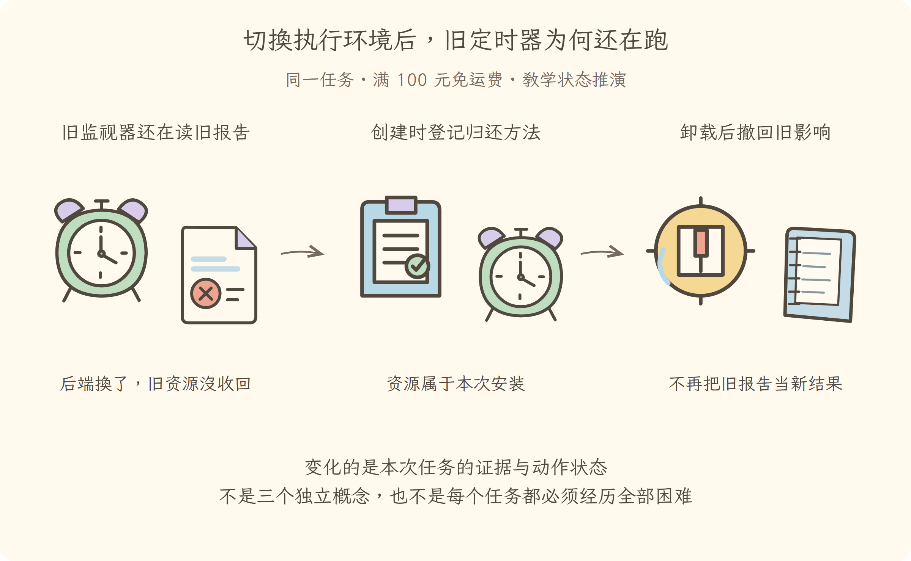

学习导航
第13讲 · 切换执行环境后，旧定时器为何还在跑
源码基线：cd5ef8148158c3a752a658978873241fdf8e2bbc。业务案例为虚构 Java 运费服务；图与流程是教学推演，源码事实另有固定证据。
从这里接上
补上能力后要替换报告监视插件。本讲要回答：切换执行环境后，旧定时器为何还在跑？
上一讲解决了“区分配置替换、插件加载和依赖激活”；这仍不能代替本讲要补的责任。
阅读与完成标准
先看逐步讲解，再做练习。视觉课件用于复习，词典随用随查，不要求先背英文。预计正文阅读 20–35 分钟，练习 10–20 分钟；这是安排建议，不是学会的证明。
读完应能解释：为什么清理函数应绑定本次安装，而不是全局插件名？ 还要能预测：同一副作用内部倒序清理，能推出全系统串行倒序吗？ 最后从源码证据定位相应责任。
现在必须懂的是本讲怎样改变证据或动作状态；具体框架中的其他选项知道存在即可，不用一次读完整个包。语法卡住可查补课 A、补课 B，工程定位查补课 C，看完返回此处即可。
本讲交接
资源随安装清理，不留下旧后端的重复工作。但下一步还要解决：同名文件服务，怎样接到这次任务的工作区。
← 第12讲：配置装配 · 第14讲：服务依赖 →
视觉课件
第13讲 · 切换执行环境后，旧定时器为何还在跑
源码基线：cd5ef8148158c3a752a658978873241fdf8e2bbc。业务案例为虚构 Java 运费服务；图与流程是教学推演，源码事实另有固定证据。
当前现场
补上能力后要替换报告监视插件。固定业务约定不变：满 10000 分免运费；原实现在等于时返回 800。禁止用修改预期的方式让测试变绿。

三分钟复述
先描述左格缺什么，再说明中格采取的机制，最后指出右格新增了哪些证据或责任。资源随安装清理，不留下旧后端的重复工作。不要只读图上的物件名；删掉中间这项机制，任务会在哪一步失去依据？
本讲最容易误会的是：同一副作用内部倒序清理，能推出全系统串行倒序吗？ 不能。实例卸载对多个顶层副作用并行等待；需要顺序的资源应在正确边界表达依赖。
从图返回源码
图只表达教学关联与状态变化，不代替完整调用顺序。源码定位提供实现或契约证据，正文解释映射和边界。
← 第12讲：配置装配 · 第14讲：服务依赖 →
逐步讲解
第13讲 · 切换执行环境后，旧定时器为何还在跑
源码基线：cd5ef8148158c3a752a658978873241fdf8e2bbc。业务案例为虚构 Java 运费服务；图与流程是教学推演，源码事实另有固定证据。
一、同一运费任务遇到的下一道障碍
第十二讲把缺失能力装好了。现在同一运费任务切换执行后端，旧的报告监视定时器却仍在读旧目录；新的监视器又启动一次。重复报告可能让主助手把旧测试当作新结果。解决办法不是让模型更努力分辨，而是把每次安装留下的资源按责任收回。
三格为同一运费任务的教学状态变化或故障对照。图不是实际运行日志；关键区别见各格说明。
二、蓝图和工单为什么必须分开
Plugin（插件定义）像设备蓝图，规定安装时做什么；Fiber（插件安装实例）像本次施工工单，记录这一次安装的状态、依赖和清理责任。不要把后者直译成“纤维”再去猜含义，它在这里不是线程、协程，也不是处理器调度单位。
同一型号设备装到两处，蓝图可以一样，现场资源和责任却不能混在一起。相应地，读取 插件登记入口，重点找定义如何被归一化，以及建立安装实例的位置。具体是否接受重复安装，还要服从登记器的规则，不能概括成“每次调用必然新增”。
蓝图只是定义，工单才拥有现场。这就解释了为什么清理不能挂在一个全局插件名字上：我们要撤销的是某一次安装留下的影响，而不是抹掉这份可复用定义。
三、安装实例拿到怎样的工作视野
每次安装还需要知道到哪里查找文件能力、事件和局部信息。Context（插件上下文）就是这份工作视野，像工位上的服务通讯录。它与模型上下文不同：模型上下文是交给模型的提示和消息；插件上下文是程序查找能力的入口。
上下文扩展 的关键是基于父对象建立子对象，再加局部元信息。子工位能沿继承关系看到父工位的能力，不需要复制整套系统。
这不是深拷贝。给子对象设置自己的属性，通常不会改写父对象的同名自有属性；但如果父子都持有同一个可变对象，修改对象内部仍可能互相可见。比如共同引用一份通讯录，子工位在通讯录里删掉一项，并不会因为“子”这个字就自动隔离。
因此，不能把“有子上下文”理解成数据完全独立，更不能理解成安全沙箱。服务解析的隔离要到第十四讲看专门机制。
四、拿到资源时，就把归还条订在工单上
只知道谁负责，还需要明确怎样归还。effect（可撤销副作用登记）把资源创建与撤销配对；disposer（清理函数）就是那张归还条。
下面是教学示例，tick 代表检查报告的函数，不是仓库中某个已运行插件：
ctx.effect(() => {
const timer = setInterval(tick, 1000)
return () => clearInterval(timer)
}, 'report-watch')
先创建定时器，再返回“停止这个定时器”的函数。注意返回的是函数，不是立即执行清理的结果。卸载时框架才调用它。如果直接返回 setInterval(...) 的结果，交上去的是计时器句柄，不是归还办法。
副作用登记入口 还支持异步结果和迭代器等形式。现在不必记完重载，先掌握契约：创建外部影响时，同时把清理责任交给本次安装。
对 Java 工程师，可以联想到资源关闭约定和生命周期销毁回调；但这里不等于一个词法范围内的 try-with-resources。资源可能跨越多次异步操作，结束边界是插件安装的卸载，而不是某个代码块的右括号。
五、后借先还，到底在哪个范围内成立
假设一次设置过程先开连接，再订阅，再启动定时器。定时器依赖订阅，订阅依赖连接。若先关连接，后面的清理可能失去可用条件。因此常用顺序是先停定时器，再退订，最后断连接。
同一副作用内部的清理收集 确实反转了清理列表。但 安装实例卸载 对多个顶层副作用采用并行等待。
这意味着：同一个归还袋内有倒序规则，不等于整座工厂所有工单都排成一条逆序队列。需要顺序保证的资源，应在正确的责任边界里表达依赖，不能仅靠“我先注册了它”猜测全局顺序。
六、换依赖时，为什么需要先停旧工作
报告监视插件如果依赖文件服务，文件服务换成另一实现后，旧定时器可能仍引用旧对象。框架不能只把通讯录改一下，然后假装旧资源自动接到了新实现。
依赖刷新 根据依赖实现的标识构成依赖组合标识。它像“这次接的是哪一组设备”的编号，不是时间戳。组合变化后，需要卸载旧影响；新依赖条件满足后，再加载。
读状态名时把它们翻译成动作即可：PENDING（等待条件）、LOADING（正在加载）、ACTIVE（已激活）、UNLOADING（正在清理）、FAILED（失败状态）、DISPOSED（永久结束）。
尤其区分“卸载”和“永久结束”：一个仍有效的安装实例可以清理后重新加载，不必每次都换一张全新的工单；已经永久结束的实例则不能靠服务回来就复活。
七、带着故障问题回看源码
如果定时器卸载后还在跑，先检查它是否通过副作用登记，以及返回的是否真是清理函数；再查清理属于哪次安装；最后查依赖变化是否触发了预期生命周期。不要先去模型提示里找原因。
本讲给第一讲的完整任务补上了“装上也能拆下”的机制，但还留下一问：工单写着“需要文件服务”，究竟从哪里找到它？同名服务有两个怎么办？这正是第十四讲要解决的接线问题。
带着实际状态进入下一讲
资源随安装清理，不留下旧后端的重复工作。清理负责撤回旧影响，但新文件能力怎样被正确找到？第十四讲沿同一工作区继续查服务解析。
← 第12讲：配置装配 · 第14讲：服务依赖 →
练习与答案
第13讲 · 切换执行环境后，旧定时器为何还在跑
源码基线：cd5ef8148158c3a752a658978873241fdf8e2bbc。业务案例为虚构 Java 运费服务；图与流程是教学推演，源码事实另有固定证据。
先作答，再展开
1. 解释机制
为什么清理函数应绑定本次安装，而不是全局插件名？
查看解释与边界
同一定义可有不同安装现场；资源和撤销责任属于具体安装，不能互相替代。
2. 预测反例
同一副作用内部倒序清理，能推出全系统串行倒序吗？
查看推演
不能。实例卸载对多个顶层副作用并行等待；需要顺序的资源应在正确边界表达依赖。
3. 源码与图相互校验
打开本讲定位，找到正文强调的分支或契约。遮住图中文字，解释左、中、右三格分别表示什么；指出图省略了哪一项实现细节。
参考核对方式
图的顺序是：旧监视器还在读旧报告（后端换了，旧资源没收回）→创建时登记归还方法（资源属于本次安装）→卸载后撤回旧影响（不再把旧报告当新结果）。
在副作用登记里找到返回的清理函数，并对照依赖变化时卸载旧影响的分支。图中旧监视器停止、新监视器接管；倒序清理只在文中指定范围成立，不是全局逆序承诺。
← 第12讲：配置装配 · 第14讲：服务依赖 →
分享稿
第13讲 · 切换执行环境后，旧定时器为何还在跑
源码基线：cd5ef8148158c3a752a658978873241fdf8e2bbc。业务案例为虚构 Java 运费服务；图与流程是教学推演，源码事实另有固定证据。
用自己的话讲给同事
我们还在查同一个 Java 运费问题：满 100 元应免运费，恰好边界却收了 8 元。走到本讲，已有条件是：补上能力后要替换报告监视插件。
如果不补这一层，会遇到的问题是：为什么清理函数应绑定本次安装，而不是全局插件名？ 同一定义可有不同安装现场；资源和撤销责任属于具体安装，不能互相替代。 所以本讲新增的不是要背的名词，而是任务中一项明确的责任。
现在能做到：资源随安装清理，不留下旧后端的重复工作。但还要守住反例：同一副作用内部倒序清理，能推出全系统串行倒序吗？ 不能。实例卸载对多个顶层副作用并行等待；需要顺序的资源应在正确边界表达依赖。
请结合本讲图说出变化，再指向源码；不要宣称这段教学推演就是实际模型日志。下一讲顺着“同名文件服务，怎样接到这次任务的工作区”继续。
术语词典
第13讲 · 切换执行环境后，旧定时器为何还在跑
源码基线：cd5ef8148158c3a752a658978873241fdf8e2bbc。业务案例为虚构 Java 运费服务；图与流程是教学推演，源码事实另有固定证据。
词典用于回查，正文在首次使用处解释。代码、参数与路径保留原拼写；产品名称不逐字翻译。模型上下文和插件上下文不是一回事。
Plugin（插件定义）
插件定义，说明如何安装一类能力，像设备的装配方案。同一定义可以有不同安装实例，定义不是正在运行的资源集合。
Fiber（插件安装实例）
插件的一次安装实例，像同一款设备的一次具体装机。它持有当前安装的资源与清理责任，不是线程或协程的同义词。
Context（插件上下文）
插件查询服务、登记事件与关联安装责任的上下文，像工位上的通讯录。不是模型可见的那叠材料，也不会自动把整个对象发给模型。
effect（可撤销副作用登记）
登记资源创建及撤销的一对动作，像借工具时同时写好归还条。忘记登记清理，卸载插件也可能留下定时器；不是所有异步任务会自动被取消。
disposer（清理函数）
释放已创建资源的清理函数，像归还工具的具体动作。需要释放哪项资源就写对应操作，不能把空函数当作已清理。
核对来源
本讲源码定位与完整正文。本例报告和金额属于教学夹具，不来自这份上游源码。